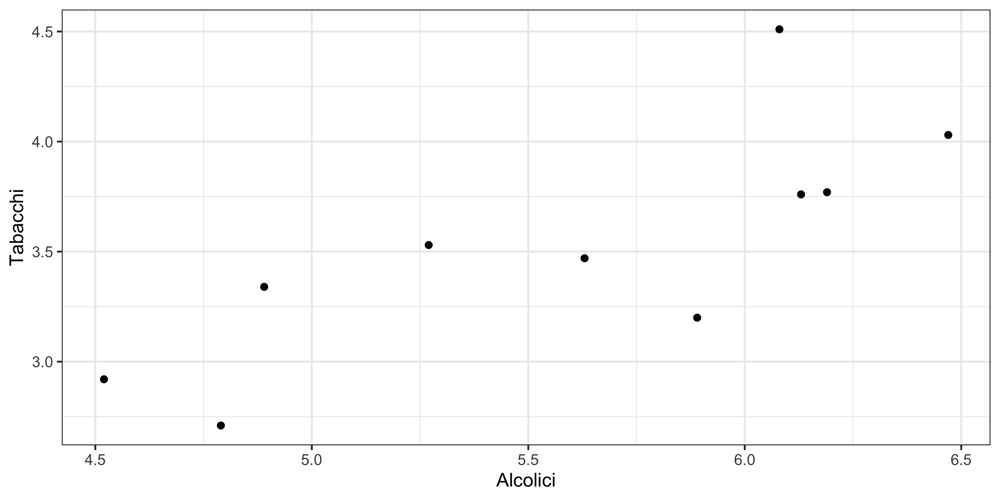
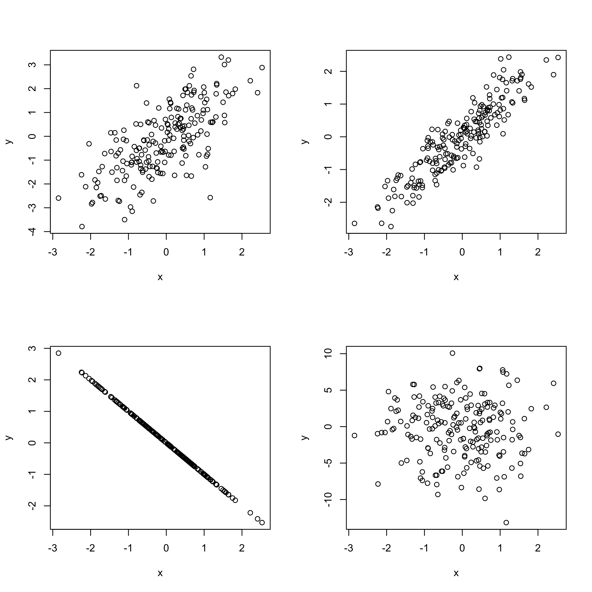

Statistica I
Esercizi 5: covarianza, correlazione, regressione lineare semplice
Homepage
Esercizio A (Tabacco e bevande alcoliche)
I risultati di un’indagine del governo britannico sulla spesa delle famiglie possono essere utilizzati per investigare sulla relazione tra l’ammontare speso per i tabacchi e quello speso per le bevande alcoliche.
La seguente tabella riporta, per n = 10 regioni della Gran Bretagna, la spesa settimanale media per famiglia per i due capitoli di spesa, espressa in sterline. I dati sono riferiti al 1981.
| Regione | Alcolici | Tabacchi |
|---|---|---|
| North | 6.47 | 4.03 |
| Yorkshire | 6.13 | 3.76 |
| Northeast | 6.19 | 3.77 |
| East Midlands | 4.89 | 3.34 |
| West Midlands | 5.63 | 3.47 |
| East Anglia | 4.52 | 2.92 |
| Southeast | 5.89 | 3.2 |
| Southwest | 4.79 | 2.71 |
| Wales | 5.27 | 3.53 |
| Scotland | 6.08 | 4.51 |
Si valuti la funzione di regressione tra le due variabili (usando la variabile alcolici come esplicativa), ripercorrendo gli stessi punti svolti nell’esercitazione 5. In particolare:
- Si disegnino i dati tramite un diagramma dispersione.
- Si ottengano medie e varianze di x ed y.
- Si ottengano le stime ai minimi quadrati.
- Si ottengano i valori previsti ed i residui della regressione.
- Si ottenga la varianza residuale.
- Si calcoli R^2 e correlazione \rho.
Esercizio B (Regressione con variabili standardizzate)
Si considerino due variabili statistiche x ed y e siano \hat{\alpha} e \hat{\beta} le stime ai minimi quadrati dei parametri del modello di regressione y = \alpha + \beta x.
Si considerino quindi le variabili z_i = \frac{x_i − \bar{x}}{\sigma_x}, \qquad w_i = \frac{y_i - \bar{y}}{\sigma_y},\qquad i=1,\dots,n. Inoltre, si consideri il modello di regressione w = \gamma + \delta z.
Si ottengano i coefficienti ai minimi quadrati \hat{\gamma} e \hat{\delta}.
Cosa si può dire circa le devianze residui dei due modelli? E degli indici R^2?
Esercizio C (I dati di Anscombe)
Sono date le seguenti osservazioni da 4 regressori e 4 variabili dipendenti
| x^{(1)} | x^{(2)} | x^{(3)} | x^{(4)} | y^{(1)} | y^{(2)} | y^{(3)} | y^{(4)} |
|---|---|---|---|---|---|---|---|
| 10 | 10 | 10 | 8 | 8.04 | 9.14 | 7.46 | 6.58 |
| 8 | 8 | 8 | 8 | 6.95 | 8.14 | 6.77 | 5.76 |
| 13 | 13 | 13 | 8 | 7.58 | 8.74 | 12.74 | 7.71 |
| 9 | 9 | 9 | 8 | 8.81 | 8.77 | 7.11 | 8.84 |
| 11 | 11 | 11 | 8 | 8.33 | 9.26 | 7.81 | 8.47 |
| 14 | 14 | 14 | 8 | 9.96 | 8.10 | 8.84 | 7.04 |
| 6 | 6 | 6 | 8 | 7.24 | 6.13 | 6.08 | 5.25 |
| 4 | 4 | 4 | 19 | 4.26 | 3.10 | 5.39 | 12.50 |
| 12 | 12 | 12 | 8 | 10.84 | 9.13 | 8.15 | 5.56 |
| 7 | 7 | 7 | 8 | 4.82 | 7.26 | 6.42 | 7.91 |
| 5 | 5 | 5 | 8 | 5.68 | 4.74 | 5.73 | 6.89 |
Si calcoli il coefficiente di correlazione per ciascuna delle coppie di variabili x^{(j)} e y^{(j)}, per j=1,\dots,4.
Si disegni il grafico a dispersione per ciascuna coppia di variabili considerata al punto precedente. Si commentino i risultati ottenuti in relazione al punto precedente.
Esercizio D (Difficile)
Per n = 10 paesi dell’Unione Europea si è osservato il prezzo in euro di un litro di benzina (variabile x) ed il numero di veicoli pro-capite circolanti (variabile y). I dati si riferiscono alla fine degli anni '90. Si conoscono i seguenti risultati: \sum_{i=1}^nx_i = 8.79, \qquad \sum_{i=1}^ny_i = 8.63, \qquad \frac{1}{n}\sum_{i=1}^nx_i^2 = 0.77385, \qquad \frac{1}{n}\sum_{i=1}^ny_i^2 = 0.7695. Inoltre, è noto che la somma dei residui al quadrato del modello di regressione y = \alpha + \beta x sono pari a
\sum_{i=1}^nr_i^2 = 0.01157.
Sulla base di queste informazioni, si ottengano le stime ai minimi quadrati \hat{\alpha} e \hat{\beta} e si ottenga un indice di bontà di adattamento. Si assuma inoltre che le variabili x ed y siano negativamente correlate.
Suggerimento. Si cominci ottenendo il valore R^2 e si ragioni quindi sulla definizione di \hat{\beta}.
Esercizio E
Nella figura che segue sono riportati i diagrammi a dispersione di 4 coppie di variabili. Ad esse corrispondono i coefficienti di correlazione \rho pari a -1,0,0.7,0.9. Si dica a quale grafico corrisponde ciascun coefficiente.
